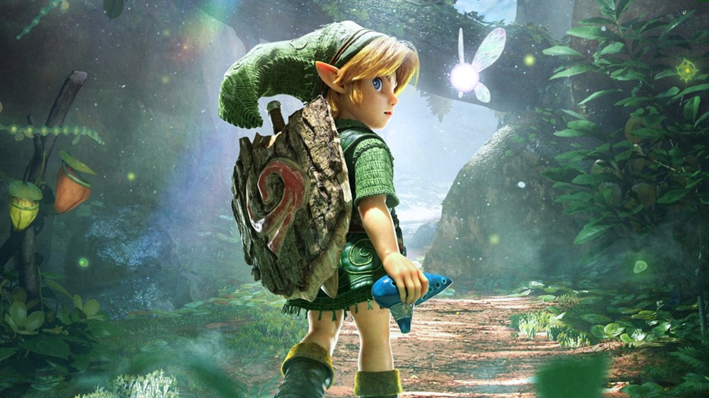

The Game Awards 2026 é uma futura premiação que homenageará os melhores jogos de 2026. Será a décima terceira edição do evento, apresentado por Geoff Keighley,
criador e produtor do The Game Awards, e acontecerá com público presencial no Peacock Theater, em Los Angeles, no dia 10 de dezembro de 2026, com transmissão ao
vivo em diversas plataformas online para o mundo todo.